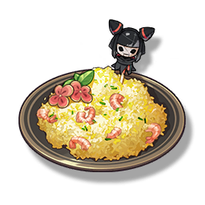

Golden Fried Rice
Supplies

Increase the defense power of all Resonators in the team by 28%, lasting 30 minutes. In multiplayer games, it only affects the player's own Character.
A bowl of fried rice is often the first simple dish that people learning to cook will master. However, to cook simple fried rice to the extreme, where each grain of rice is like real gold, only people who are very picky about food can do it. Yinlin, due to the needs of the task, often comes into contact with people who are either rich or noble, and her own taste buds have become extremely picky. This golden fried rice is her favorite dish among them. Cheap Ingredients, priceless skills, is exactly what she is after.